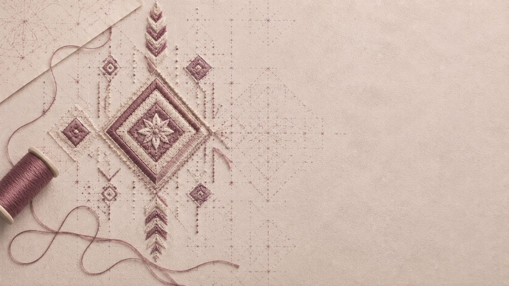
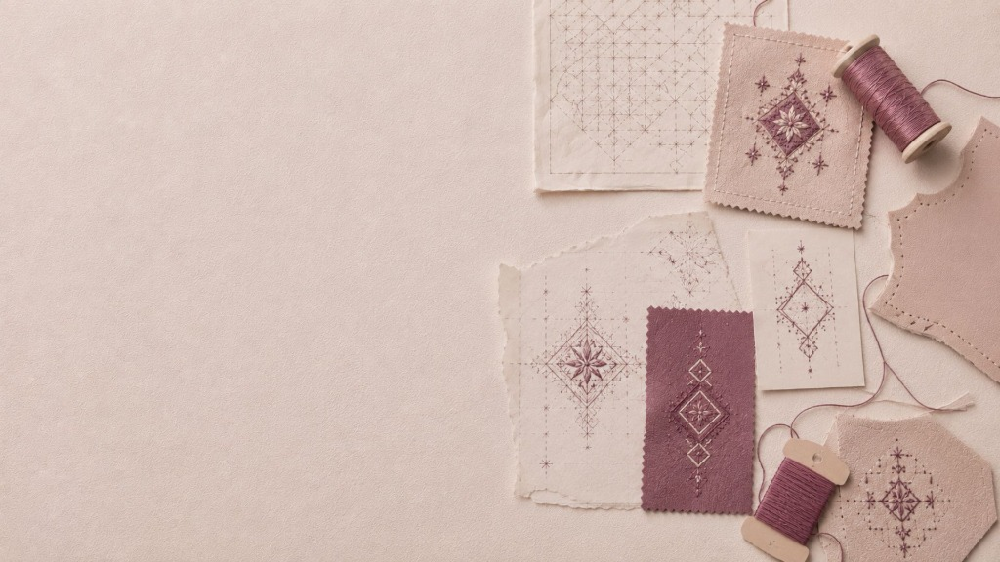
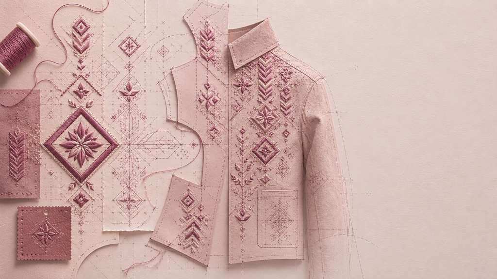
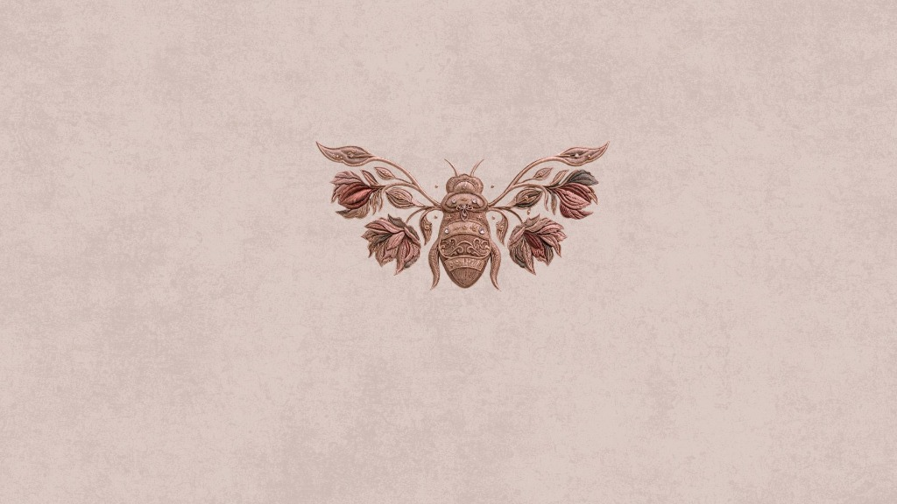

The bee does not dream of honey.
Honey is what it leaves behind.

The bee dreams of the flower.
Of golden threads stretched tight,
waiting to register the touch of the needle.

A memory stitched in silk.
Carrying the wisdom of hands that have spent
generations tracing the geometry of grace.

Every jacket is a canvas of dreams.
Soft wools and structured velvets meeting
the absolute delicacy of Zardozi.

An emblem of devotion.
Sewn into the collar, close to the skin.
A secret luxury.